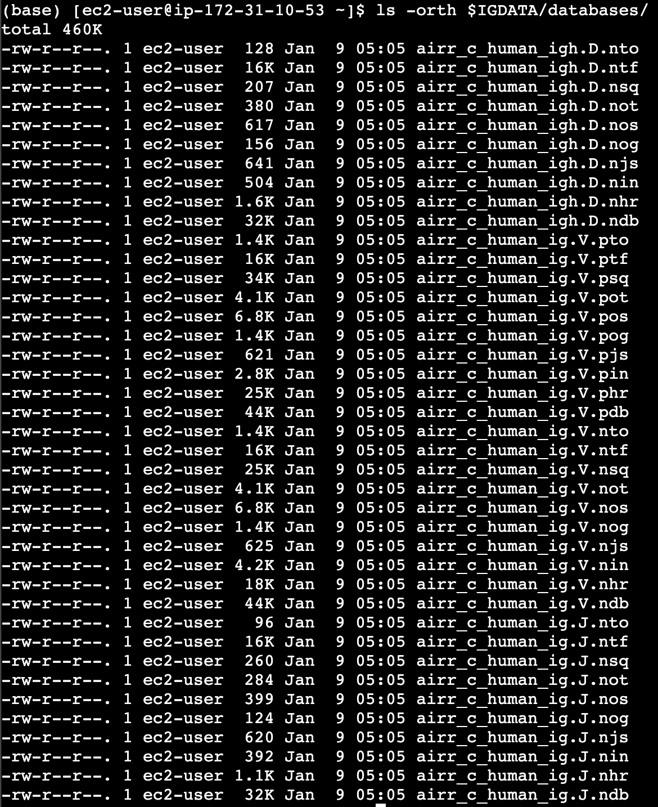

IgBLAST stand-alone
Introduction
IgBLAST developers have made strides to include AIRR-C Reference Sets for users and you can easily specify this with the dropdown button on the IgBLAST webserver. For further information about using IgBLAST, refer to their guide.
Installation
Assuming you don’t already have an IgBLAST installation, download IgBLAST and set your $IGDATA variable so that IgBLAST knows where to find the internal_data directory. You can also either move the executables to your $PATH, or tell the interpreter where to find the IgBLAST binaries:
wget https://ftp.ncbi.nih.gov/blast/executables/igblast/release/LATEST/ncbi-igblast-1.22.0-x64-linux.tar.gz
tar -xvzf ncbi-igblast-1.22.0-x64-linux.tar.gz
export IGDATA=${PWD}/ncbi-igblast-1.22.0
export PATH=$PATH:$IGDATA/bin
To follow the remainder of the steps, you will also need to install receptor_utils.
pip install receptor_utils
Downloading the AIRR-C Reference Sets
When you initially set up IgBLAST (if it wasn’t just now!), you will have downloaded particular germline databases for the program which you will have supplied to IgBLAST via its -germline_db_V, -germline_db_J and -germline_db_D arguments. To use AIRR-C Reference Sets, we need to download the AIRR-C versions of these BLAST databases. The developers of IgBLAST kindly make these available via the ftp server - or you can build your own.
mkdir $IGDATA/databases
wget https://ftp.ncbi.nih.gov/blast/executables/igblast/release/database/airr/airr_c_human.tar
tar -f airr_c_human.tar -C $IGDATA/databases
If you look in your $IGDATA/databases directory, you should see the following:
{kind=link}
In addition to these databases, IgBLAST has its own data directory called “internal_data”, which you are warned not to touch except for making your own custom species directories, as well as “auxiliary_data”. To use the AIRR-C Reference Sets with full IgBLAST capabilities (i.e. CDR annotation), you will need to create two file types using the receptor_utils package.
These are:
.ndm file: the ndm file contains CDR1 + CDR2 coordinates for the V genes in your reference.
.aux file: the aux file contains CDR3 coordinates for the J genes in your reference.
You can supply the paths to these new files when you run IgBLAST as a standalone using the “-custom_internal_data” and “-auxiliary_data” flags. Because you’ll be supplying the path yourself, put them where you’d like - in the example below we keep it in a neat AIRR-C directory and put the resultant files in the internal_data and optional_file directories.
Creating the .ndm file
The .ndm file contains the CDR/FWR annotations for the V gene database. The best way to do this is using the AIRR-formatted JSON file retrieved by the OGRDB API. Retrieve for all three loci, run receptor_util’s make_ndm executable, and combine into a single .ndm file.
mkdir airrc_sets
curl https://ogrdb.airr-community.org/api/germline/set/Human/IGH_VDJ/published/airr_ex > airrc_sets/human_VDJ.json
curl https://ogrdb.airr-community.org/api/germline/set/Human/IGKappa_VJ/published/airr_ex > airrc_sets/human_kappa.json
curl https://ogrdb.airr-community.org/api/germline/set/Human/IGLambda_VJ/published/airr_ex > airrc_sets/human_lambda.json
make_igblast_ndm airrc_sets/human_VDJ.json VH airrc_sets/human_vdj.ndm.imgt
make_igblast_ndm airrc_sets/human_kappa.json VL airrc_sets/human_vkappa.ndm.imgt
make_igblast_ndm airrc_sets/human_lambda.json VL airrc_sets/human_vlambda.ndm.imgt
cat airrc_sets/human_vdj.ndm.imgt > airrc_sets/airrc_human.ndm.imgt
cat airrc_sets/human_vkappa.ndm.imgt >> airrc_sets/airrc_human.ndm.imgt
cat airrc_sets/human_vlambda.ndm.imgt >> airrc_sets/airrc_human.ndm.imgt
mkdir $IGDATA/internal_data/airrc_human
mv airrc_sets/airrc_human.ndm.imgt $IGDATA/internal_data/airrc_human
Creating the .aux file
The .aux file tells IgBLAST where to find the CDR3 coordinates in the IGJ genes. Again, this file cannot be downloaded currently from IgBLAST. To do so, we need to download and parse the FASTA files from OGRDB to create a unified IGJ FASTA for all the IG loci. Download the FASTAs:
curl https://ogrdb.airr-community.org/api/germline/set/Human/IGH_VDJ/published/gapped_ex > airrc_sets/human_VDJ.fasta
curl https://ogrdb.airr-community.org/api/germline/set/Human/IGKappa_VJ/published/gapped_ex >> airrc_sets/human_VDJ.fasta
curl https://ogrdb.airr-community.org/api/germline/set/Human/IGLambda_VJ/published/gapped_ex >> airrc_sets/human_VDJ.fasta
Excuse the Python - a code example for filtering each gene:
import receptor_utils
import os
seqs = receptor_utils.simple_bio_seq.read_fasta(os.path.join('airrc_sets', 'human_VDJ.fasta'))
for gene in ['V', 'D', 'J']:
with open(f'airrc_sets/human_gl_{gene}.fasta', 'w') as k:
[k.write(f'>{seq_id}\n' + seqs[seq_id] + '\n') for seq_id in seqs if seq_id[3] == gene]
Now, we run “annotate_j” which you installed as part of receptor_utils:
annotate_j airrc_sets/human_gl_J.fasta $IGDATA/optional_file/airrc_human_gl.aux
You now have all the files IgBLAST needs: the BLAST databases, and the coordinate files (.ndm + .aux).
Testing
Let’s test our installation using test data courtesy of the Immcantation team.
curl https://zenodo.org/records/10046916/files/input.fasta?download=1 > example_data.fasta
head -n 51 example_data.fasta > example_data_mini.fasta
igblastn -germline_db_V $IGDATA/databases/airr_c_human_ig.V \
-germline_db_J $IGDATA/databases/airr_c_human_ig.J \
-germline_db_D $IGDATA/databases/airr_c_human_igh.D \
-custom_internal_data $IGDATA/internal_data/airrc_human/airrc_human.ndm.imgt \
-query example_data_mini.fasta -auxiliary_data $IGDATA/optional_file/airrc_human_gl.aux \
-show_translation -outfmt '7 std qseq sseq btop' > test_output.fmt7
And there you have it!